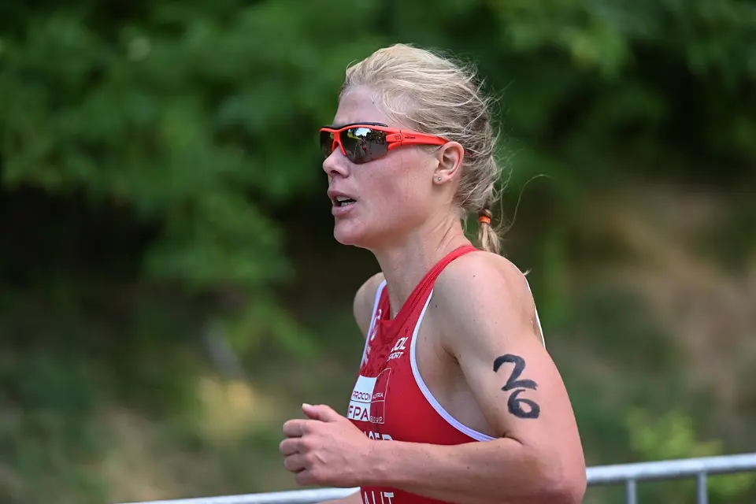

Your first triathlon: finding the right entry matters
Swim start at the Triathlon Weiswampach. Photo: Steven Fruitsmaak, Wikimedia Commons, CC BY-SA 3.0
Swim, bike, run – and no idea where to start? You're in the right place. Here's how to pick the right distance, spot a beginner-friendly race and get to the start line ready to go in just twelve weeks.
1. Pick your distance
Triathlon comes in all sizes. The formats differ mainly in length – and so in how much training they demand. The figures below come from the rulebook of the German Triathlon Union (DTU), which follows the distances set by the world governing body, World Triathlon[1][2]. The federations set ranges, and most organisers land somewhere inside them.
| Format | Swim | Bike | Run | For whom? |
|---|---|---|---|---|
| Super sprint | 250–500 m | 6.5–13 km | 1.7–3.5 km | For a first taste |
| Sprint (often called “Volks” or “Jedermann” distance) | 500–750 m | 18–22 km | 4.5–5.5 km | The classic way in |
| Olympic (standard distance) | 1.5 km | 40 km | 10 km | If you already train regularly |
| Middle distance (70.3) | 1.9–2.9 km | 80–90 km | 18–22 km | After a season or two |
| Long distance (140.6) | 3–4 km | 91–200 km | 22–42.2 km | The big goal for later |
The Ironman formats 70.3 and 140.6 are named after their total length in miles: 1.9 + 90 + 21.1 km and 3.8 + 180 + 42.2 km.
Our advice: start with a sprint or super sprint – the DTU recommends the same for newcomers[3]. You'll learn all the essentials – the transition zone, the start-line nerves, that wobbly switch from bike to run – without the distance swallowing you whole. A handy benchmark: if you can swim 500 metres non-stop, cycle for an hour and run for 30 minutes without walking, you're ready to train for a sprint.
2. Spot a beginner-friendly race
- A pool or a calm lake: a pool triathlon with staggered starts is the gentlest way in. At a mass start in open water, line up at the side or near the back.
- A flat bike loop: little climbing and a closed circuit take a lot of the stress away.
- A beginners' category: look for “Jedermann” or novice waves – you'll race people like you, not the club hotshots.
- Plenty of lead time: depending on your starting fitness, the DTU suggests three to six months of preparation[3].
- Close to home: a local race saves you a hotel night and lets you ride the course in advance.
Tip: read the race information carefully. It'll tell you whether wetsuits are allowed or compulsory, whether drafting is banned and which bikes you can use. And no, you don't need a fancy road bike: for non-drafting races the DTU doesn't specify a bike type – it just requires things like two independent brakes and plugged handlebar ends[1]. The DTU actively encourages beginners to race on whatever bike they already own[3].
3. Find your race on endurance-events.de
- Open the list of all super sprint and sprint triathlons.
- Enter your home town under “Place & radius” – a 50 km radius is a good start.
- Under “Date”, pick a window that leaves you twelve weeks to prepare.
- Tap a race to see its format, date and a link to the organiser – and add it straight to your calendar.
Nothing that fits yet? Set up email alerts and we'll let you know as soon as a matching race appears. Or check the map to see what's on in your area at a glance.
4. Twelve weeks to race day
Twelve weeks is enough if you've already got some base fitness – the DTU even offers free 12- and 20-week sprint training plans[4]. Our rough outline is based on experience: four to six sessions a week, each 30 to 60 minutes long.
Weeks 1–4: lay the foundations
- Two swims, two rides and two runs a week, all at an easy pace.
- Focus on your swim technique – a technique class or club session is where you'll gain the most.
Weeks 5–9: build it up
- Gradually lengthen your sessions and go a little faster once a week.
- Brick sessions: run for 10–20 minutes straight off the bike. It teaches your legs to deal with that jelly feeling.
- Get into open water at least twice if you can – in a wetsuit if it's cool.
- Rehearse your transition at home: helmet on, shoes on, race number spun round.
Weeks 10–12: sharpen up
- In week eleven, do half the race distance in one go.
- In the final week, cut your training right back and arrive at the start fully rested.
Haven't done any sport in a while? Get a quick check-up before you start training – the DTU recommends it too[3]. Then you can go all in with peace of mind.
5. The rules nobody tells beginners
- Helmet first: buckle your helmet before you lift your bike off the rack, and keep it buckled until the bike is back on the rack[1][2].
- Mount and dismount at the line: only get on or off your bike at the marked line by the transition exit – no riding inside transition[1].
- Race number: on your back for the bike, on your front for the run, not at all for the swim[1]. A race belt lets you spin it round in a second.
- No music: anything that distracts you from the race – music explicitly included – is banned, and you can be disqualified for it[1].
- No drafting: in age-group and “Jedermann” races, drafting is usually banned. The draft zone is 12 metres long, and you have 25 seconds to complete an overtake[1].
Wetsuit or not? The water decides
Whether you can – or must – wear a wetsuit depends on the water temperature and swim distance, as set out in the DTU rules[1]. For age groups up to 59:
| Swim distance | Compulsory | Allowed | Banned |
|---|---|---|---|
| up to 1,500 m | 14.0–15.9 °C | 16.0–21.9 °C | from 22.0 °C |
| over 1,500 m | 14.0–15.9 °C | 16.0–24.5 °C | from 24.6 °C |
From age 60, wetsuits are allowed over all distances up to 24.5 °C. Below 14 °C, the rules say the swim is cancelled altogether[1]. The organiser will announce the measured water temperature before the start.
6. Your race-day checklist
- Race pack, race number and race belt
- Swim cap and goggles – if the organiser hands out caps, you have to wear theirs[1]
- Wetsuit, if allowed or compulsory (see above)
- Bike, helmet, cycling shoes or trainers, water bottle
- Running shoes – elastic laces save precious seconds
- A towel for your transition spot, sun cream, something to eat afterwards
Get there early: transition check-in times are in the race information and they're strict – turn up late and you might not be allowed to start[1]. Wear your helmet, buckled, when you check in[1]. Then walk the routes from “swim in”, “bike out” and “run out” once and memorise where your spot is – after the swim, everything looks different.
The bottom line
Your first triathlon isn't rocket science: a short distance, a race close to home, twelve weeks of training – and a little courage on the start line. First time round, there's only one goal: crossing that finish line.
Find your first race now
All super sprint and sprint triathlons in Germany, Austria, Switzerland and South Tyrol – with date, location and a link to the organiser.
Sources
- Deutsche Triathlon Union: Sportordnung (SpO), 2026 edition, including §§ 7.3, 9.1, 18, 21–27, 33, 34. triathlondeutschland.de
- World Triathlon: Competition Rules (version of 29 April 2026), sections 4.2 (wetsuit), 5.5 (drafting), appendix A (race distances). triathlon.org
- Deutsche Triathlon Union: Tipps für den Einstieg (tips for getting started). triathlondeutschland.de
- Deutsche Triathlon Union: Trainingspläne für die Sprintdistanz (training plans for the sprint distance, 12 and 20 weeks). triathlondeutschland.de
All sources accessed on 4 November 2026. Training advice without a source is based on experience.